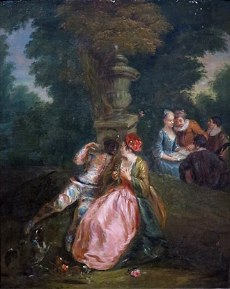

Colombine
Poème de Paul Verlaine (1844 -1896)
Musique de Georges Brassens (1956)
|
|
|
(1) Comme pour la plupart des chansons de Brassens sur ce site, cette traduction chantable est basée sur la traduction en prose de David Yendley (http://dbarf.blogspot.fr/2012/05/alphabetical-list-of-my-brassens-songs.html). (2) Do mi sol mi fa : Brassens a construit sa mélodie sur ces notes. |
(1) Like for most of the Brassens songs at this site this singable translation is based on the prose translation by David Yendley (http://dbarf.blogspot.fr/2012/05/alphabetical-list-of-my-brassens-songs.html). (2) Do mi sol mi fa : Brassens took the hint for his tune. |
|
 Brassens chante "Colombine" |